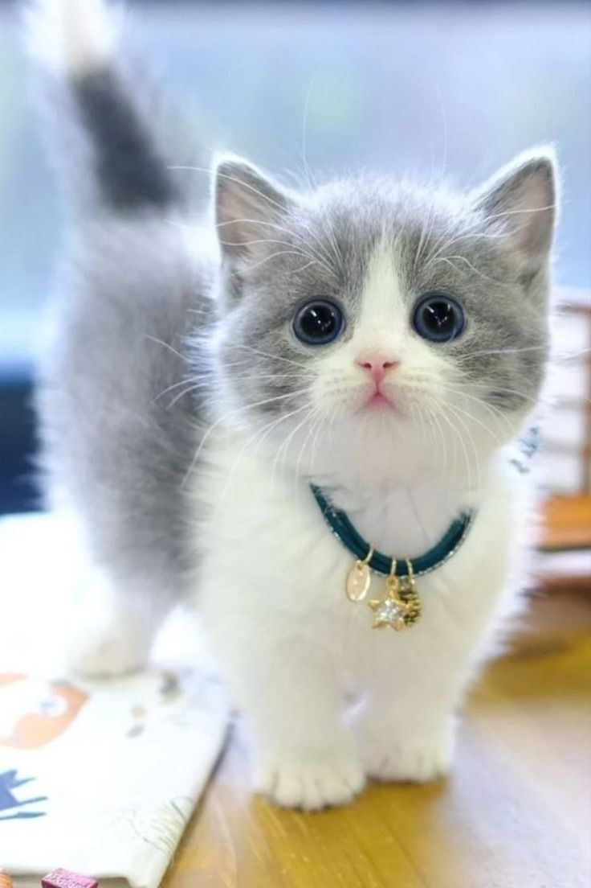
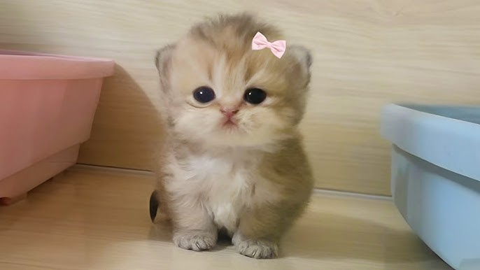
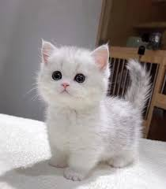

Les petits chatons trop mignons
English
Français
Home
Gallery
Contact
le chat mignon
noooon ce chat est vraiment mignon

un autre chat mmignon
olalaaa il est cute

cuuute ce chat
ah oui effectivement il est mignon !
